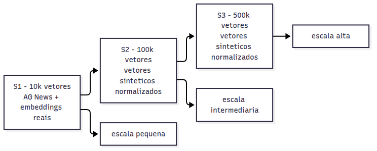
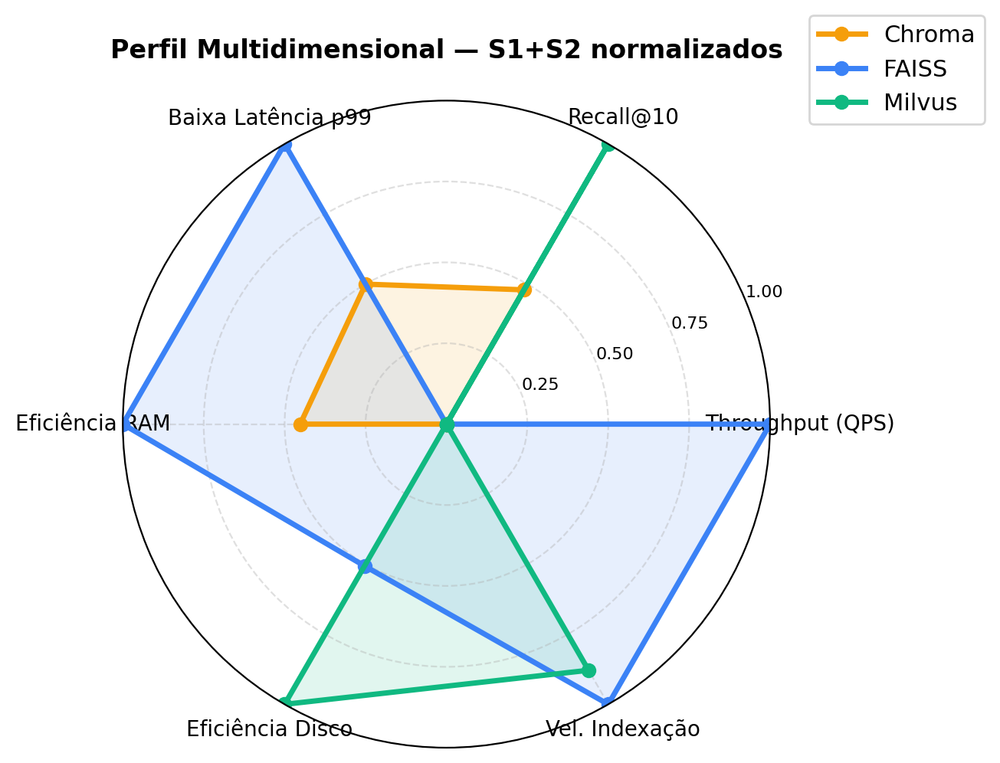

Comparação de
Bancos Vetoriais
em Pipelines RAG
FAISS · Milvus · Chroma — desempenho, escalabilidade e qualidade de recuperação semântica
Agenda da apresentação
Contexto & Motivação
LLMs revolucionaram o PLN, mas apresentam três limitações estruturais em cenários de precisão factual:
Alucinação
Texto fluente, porém factualmente incorreto ou sem evidência.
Janela finita
Limite de contexto impede processar grandes bases de documentos.
Conhecimento estático
Retreinamento oneroso para incorporar informações novas.
Geração Aumentada de Recuperação (RAG): conecta o modelo de linguagem a uma base externa de vetores para buscar contexto atualizado e gerar respostas ancoradas em fatos (Lewis et al., 2020).
A lacuna na literatura
Por que escolher um banco vetorial é difícil?
A busca vetorial é o gargalo de qualidade do RAG, mas falta evidência comparativa neutra:
- Benchmarks de fornecedores: tendem a favorecer a própria ferramenta.
- ANN-Benchmarks: mede apenas busca bruta, ignorando ingestão e persistência.
- Estudos isolados: variam em hardware, volume e métricas, impedindo comparação direta.
- Decisão sem evidência: equipes escolhem por intuição ou documentação comercial.
"Qual solução apresenta o melhor equilíbrio entre desempenho, escalabilidade e taxa de acerto relativa à referência exata em diferentes volumes de dados?"
Comparação sistemática, controlada e reprodutível entre FAISS, Milvus e Chroma — avaliando ingestão, latência, recursos e Recall@k com rigor estatístico.
O que este trabalho entrega
Comparar de forma sistemática e reprodutível FAISS, Milvus Lite e Chroma como camada de busca em pipelines RAG, avaliando desempenho, escalabilidade e taxa de acerto para orientar decisões arquiteturais.
Objetivos Específicos
- Caracterizar arquiteturas e algoritmos de busca vetorial (HNSW, IVF, PQ).
- Implementar pipeline padronizado com as bibliotecas nativas de cada solução.
- Avaliar em 3 cenários de escala: 10 mil, 100 mil e 500 mil vetores.
- Mensurar latência (p50/p99), throughput, RAM, disco e Recall@k.
- Identificar vantagens relativas e disponibilizar código aberto (MIT).
Arquitetura RAG
1. Ingestão (offline)
Documentos são segmentados em chunks, convertidos em vetores numéricos e indexados no banco vetorial.
2. Consulta (online)
A pergunta vira vetor, o banco recupera os trechos mais próximos e o LLM gera a resposta com base nesse contexto.
Como os bancos buscam vetores?
HNSW
Organiza vetores em camadas de grafo: níveis superiores dão saltos longos e a base refina a vizinhança. Baixa latência ao custo de mais memória.
IVF
Agrupa vetores em regiões (clusters) com centroides. Na consulta, varre apenas os grupos mais próximos da pergunta.
Flat / Exato
Compara a consulta com 100% dos vetores armazenados, sem nenhuma aproximação ou perda de precisão.
Inner Product (Produto Interno) com Vetores Normalizados
Textos parecidos apontam para a mesma direção no espaço vetorial.
Ajustamos todos os vetores para o mesmo tamanho (comprimento = 1) para comparar apenas a direção.
Com tamanho = 1, o produto interno equivale à Similaridade de Cosseno, calculada muito rápido na CPU.
Os três candidatos
Desempenho máximo
- Biblioteca sem servidor e sem camada de persistência nativa.
- Opera diretamente em memória de forma determinística.
- Suporta HNSW, IVF, PQ e busca exata.
- Papel duplo: candidato do benchmark e oráculo de ground truth.
Orientado à produção
- Versão local embarcada do banco vetorial Milvus.
- Oferece persistência em disco e gerenciamento de coleções.
- Expõe controle explícito de parâmetros do grafo HNSW na API.
Experiência do desenvolvedor
- Interface minimalista e integração direta com LangChain e LlamaIndex.
- Configura o índice HNSW automaticamente, ocultando parâmetros complexos.
- Foco em prototipagem rápida; em S3 (500k vetores) atingiu timeout.
A seleção cobre três posicionamentos distintos: biblioteca de alto desempenho em memória (FAISS), banco estruturado em modo local (Milvus Lite) e banco focado em produtividade (Chroma).
O pipeline experimental
Componentes fixos (controle experimental)
- Embeddings (all-MiniLM-L6-v2): modelo leve (33M parâmetros) que converte textos em vetores de 384 dimensões.
- Métrica (Inner Product + L2-norm): garante equivalência à similaridade de cosseno com alta velocidade.
- Ambiente: Python 3.12 · Google Colab CPU (~12,67 GB RAM) · bibliotecas nativas sem middleware.
- Protocolo de execução: 200 consultas idênticas por cenário · 10 repetições (+ 1 aquecimento descartado).
Cenários de Escala (S1, S2 e S3)
Embeddings reais do corpus de notícias AG News. Simula prototipagem e prova de conceito.
Vetores gaussianos normalizados. Simula produção média em departamento ou PME.
Vetores gaussianos normalizados. Simula carga empresarial e teste de limites operacionais.

Por que dados sintéticos em S2 e S3?
- Reprodutibilidade: replicação exata da distribuição entre execuções.
- Escalabilidade: geração de até 500k vetores sem gargalo de download ou processamento.
- Isolamento: elimina viés de redundância textual entre documentos.
Como medimos a qualidade: Recall@k
Para cada consulta, comparamos os k itens retornados pelo banco com os k vizinhos exatos do oráculo (ground truth).
A consulta conta como acerto quando há pelo menos um item em comum (interseção não vazia).
Valores avaliados: k ∈ {1, 5, 10}
- k = 1: exige que o primeiro resultado seja exatamente o vizinho mais próximo real.
- k = 5 e k = 10: avaliam se a vizinhança relevante foi preservada no topo da busca.
Desempenho operacional & validação estatística
Métricas operacionais coletadas
- Tempo de indexação (s): quanto tempo o banco leva para ingerir e construir o índice.
- Latência p50 e p99 (ms): tempo típico (mediana) e pior caso (99%) por consulta.
- Throughput (QPS): quantas consultas por segundo o banco processa.
- Consumo de RAM (MB): memória adicional alocada pelo processo durante a indexação.
- Tamanho em disco (MB): espaço ocupado pelos arquivos persistidos.
Por que 10 repetições?
Medir apenas uma vez sofre ruído do sistema operacional e cache. Repetir 10 vezes (após 1 aquecimento descartado) captura a estabilidade real de cada banco.
Intervalo de Confiança (IC 95%)
Calculado via distribuição t de Student. Indica a faixa onde está a latência média real com 95% de confiança — faixas estreitas mostram desempenho previsível.
Teste de Wilcoxon (p < 0,05)
Compara os bancos par a par sem assumir distribuição normal (ideal para latências). Se p < 0,05, a diferença observada é real, e não acaso.
S1 — 10 mil vetores (AG News, embeddings reais)
FAISS é ~2 ordens de grandeza mais rápido que as alternativas em S1, operando em memória com apenas 0,3 MB adicionais de RAM.
Os três bancos atingem Recall@10 = 1,000 neste volume pequeno. A diferença prática está na velocidade de busca e no tempo de ingestão (Chroma leva 39,5 s contra 1,41 s do FAISS).
Diferença estatística: o teste de Wilcoxon confirma que todas as diferenças de latência entre pares são significativas (p ≤ 0,0195).
S2 — 100 mil vetores (sintéticos normalizados)
O trade-off velocidade × recall surge claramente em S2: FAISS lidera em velocidade (2.139 QPS), mas seu Recall@10 cai para 0,395.
Milvus preserva Recall@10 = 1,000, porém sua latência sobe para 31,79 ms (28,1 QPS) e consome 531,4 MB de RAM.
Chroma ocupa posição intermediária: Recall@10 = 0,685 e p50 = 11,80 ms (75,5 QPS), mas leva ~13 minutos (784,7 s) apenas para indexar.
S3 — 500 mil vetores — limites operacionais
⚠ Chroma — Timeout de inserção
Não concluiu a inserção dos 500k vetores no limite operacional (1.811 s acumulados). A ausência de latência e Recall@k é parte do resultado experimental.
FAISS IVF707 indexou em apenas 32,96 s e entregou 5.467 QPS (0,18 ms), mas com Recall@10 = 0,100 usando parâmetros padrão.
Milvus HNSW manteve Recall@10 = 1,000, exigindo 2,34 GB de RAM e entregando 11,6 QPS (86,8 ms).
Incerteza (IC 95%) e Significância (Wilcoxon)
O que o IC 95% revela?
No S3, o FAISS HNSW-32 tem média de 1,095 ms com IC 95% amplo (0,555 a 1,635 ms) e CV de 68,9% — mostrando oscilação entre execuções, enquanto o Milvus S3 é lento (86,6 ms), porém muito estável (CV = 4,4%).
Resultado do Teste de Wilcoxon
- S1 e S2: todas as comparações entre pares tiveram p ≤ 0,0195 — diferenças reais de latência.
- S3: FAISS × Milvus também significativo (p = 0,002); Chroma não testado por timeout.
- Conclusão prática: a diferença de velocidade entre os bancos é estatisticamente comprovada, não ruído de medição.
Leitura prática dos intervalos
- IC 95% estreito (ex.: FAISS S1: 0,0555–0,0589 ms) indica alta previsibilidade de resposta.
- CV elevado no FAISS S3 (68,9%) alerta para oscilações em escala maior, exigindo análise além da mediana.
Discussão dos trade-offs

- Menor latência e maior throughput em todos os cenários.
- Recall@10 cai para 0,395 (S2) e 0,135 (S3) com parâmetros padrão.
- Indicado quando velocidade é prioridade ou há ajuste fino de parâmetros.
- Mantém Recall@10 = 1,000 em S1, S2 e S3.
- Maior latência (86,8 ms em S3) e maior consumo de RAM (2,34 GB em S3).
- Indicado quando qualidade de recuperação é crítica e há memória disponível.
- Equilíbrio intermediário em S1 e S2 (Recall@10 = 0,685 e 11,8 ms em S2).
- Indexação mais lenta entre os bancos concluídos.
- Não concluiu a ingestão de 500k vetores (S3), exigindo cautela em larga escala.
Qual banco escolher?
Recomendações condicionais — não uma classificação universal. Válidas apenas para os volumes, índices e ambiente testados.
| Volume / Requisito | Latência crítica | Maior Recall@10 | Facilidade operacional | Menor uso de recursos |
|---|---|---|---|---|
| Prototipagem < 50k | FAISS HNSW-32 | Milvus ou Chroma (ambos = 1,000 em S1) | Chroma (HNSW automático) | FAISS (mínimo delta RAM) |
| Produção leve 50k–200k | FAISS HNSW-32 | Milvus HNSW-16 (= 1,000 em S2) | Chroma (se ingestão compatível) | FAISS |
| Produção intensa > 200k | FAISS IVF707 ou HNSW-32 | Milvus HNSW-16 (= 1,000 em S3) | Milvus Lite (ressalva: não distribuído) | FAISS IVF707 em tempo/latência |
Resposta à questão norteadora
"Qual solução apresenta o melhor equilíbrio entre desempenho, escalabilidade e taxa de acerto?"
Resposta
Não há um vencedor universal. Cada solução equilibra velocidade, qualidade de recuperação e recursos de forma distinta:
- FAISS: lidera em latência (0,06 ms a 0,80 ms) e throughput (até 17,5 mil QPS), mas perde Recall@10 em escala (0,395 em S2; 0,135 em S3).
- Milvus Lite: preserva Recall@10 = 1,000 em todos os cenários, ao custo de maior latência (86,8 ms) e 2,34 GB de RAM em S3.
- Chroma: entrega boa praticidade e equilíbrio até 100k vetores (Recall@10 = 0,685), porém atingiu timeout na ingestão de 500k vetores.
Objetivos atendidos
- Arquiteturas e algoritmos HNSW, IVF e Flat caracterizados.
- Pipeline padronizado implementado com bibliotecas nativas.
- 3 cenários de escala (10k, 100k, 500k) executados e medidos.
- Rigor estatístico aplicado (IC 95% e teste de Wilcoxon).
- Código e dados disponibilizados publicamente (licença MIT).
Próximos passos
Ajuste sistemático de parâmetros (efSearch/nprobe), testes em GPU, busca híbrida (BM25 + vetores) e avaliação ponta a ponta com LLM e RAGAS.
Obrigado!
Breno Alves de Oliveira
Análise e Desenvolvimento de Sistemas
Não existe uma solução dominante. FAISS para velocidade, Milvus para qualidade de recuperação em escala, Chroma para facilidade operacional em volumes menores.
Orientadora: Prof. Esp. Mariangela Ferreira Fuentes Molina